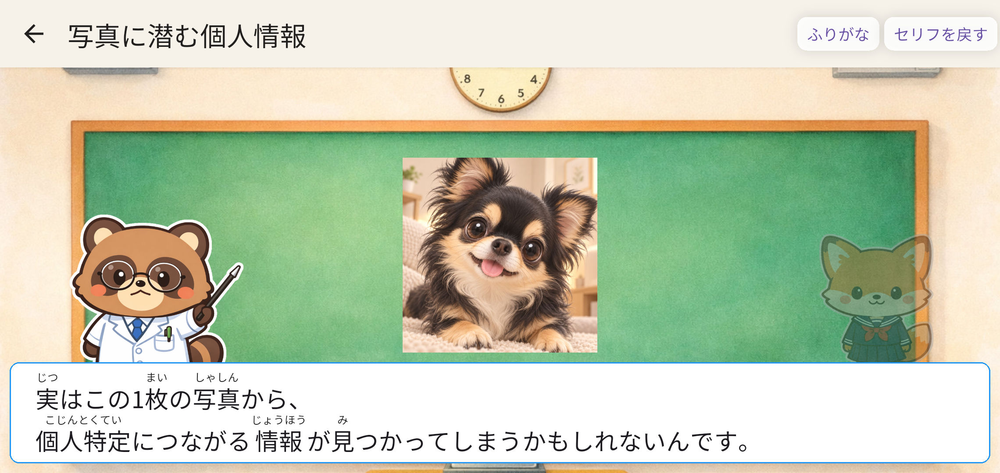
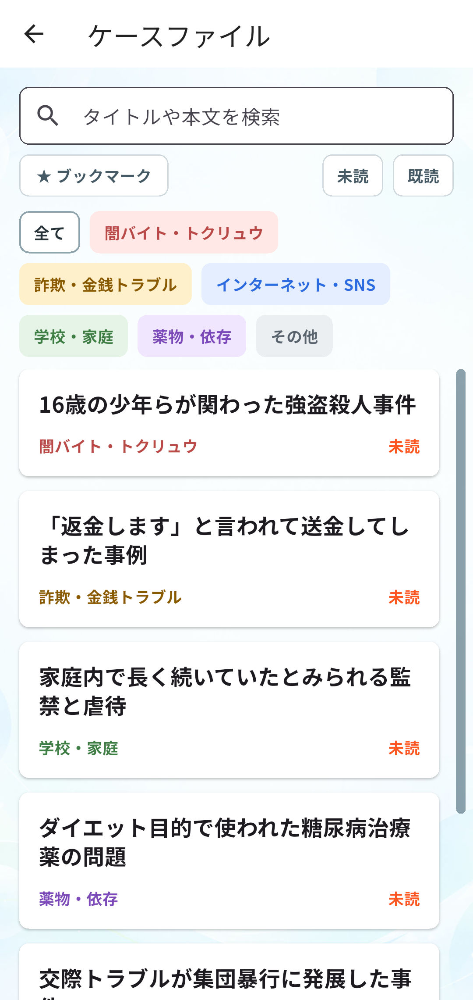
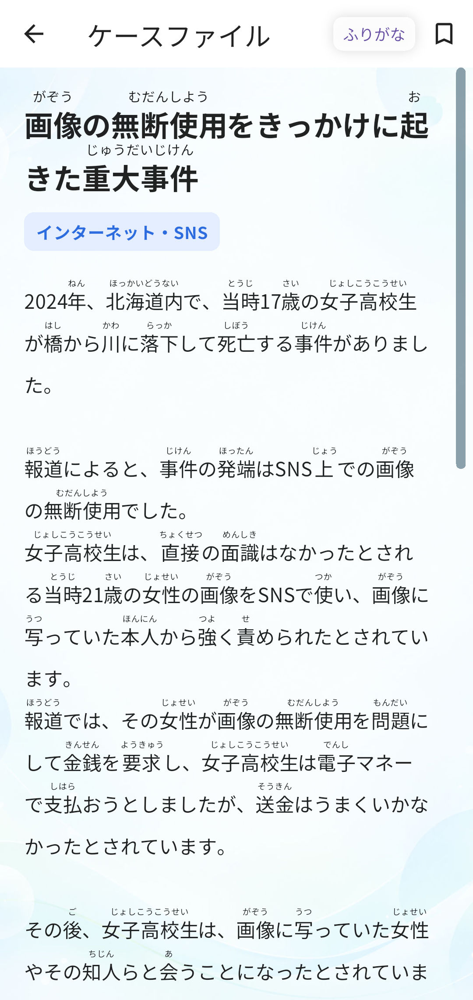
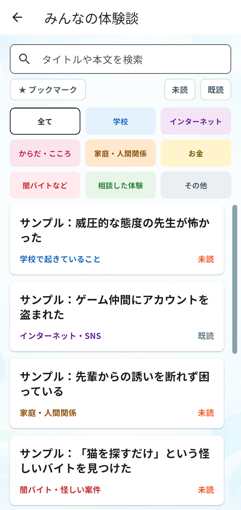
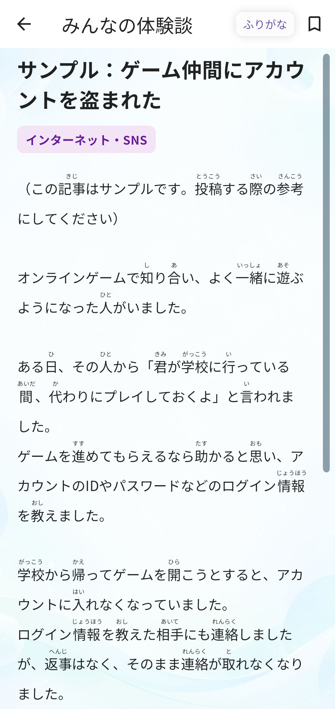
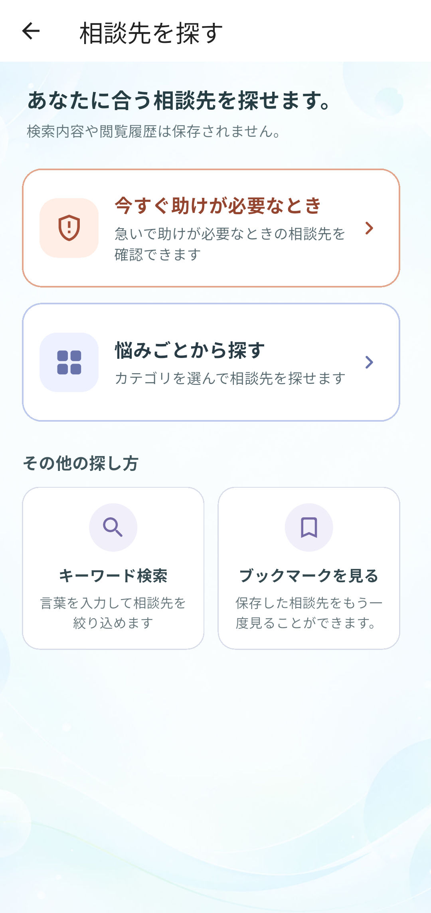
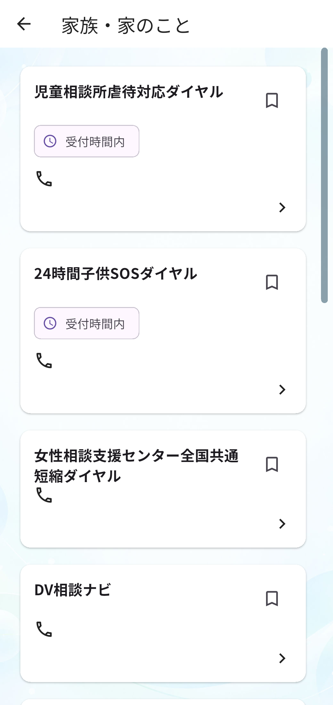

知っておきたいこと
キャラクター同士の会話を読みながら、身近なテーマについて分かりやすく知ることができます。
MIRAI SAFE APP
ミライセーフアプリは、主に若い世代に向けて、自身や周囲の人について知るきっかけや、困ったときに次の一歩を見つけるための情報を届けるアプリです。
SNSやAIに潜む危険性、詐欺や闇バイト、学校や家庭での悩み、からだやこころのことなど、身近でありながら知る機会の少ないさまざまなテーマを扱います。
知識を得るだけでなく、自分の悩みや置かれている状況について整理したり、必要に応じて相談先を探したりするための入り口となることも目指しています。
FEATURES

キャラクター同士の会話を読みながら、身近なテーマについて分かりやすく知ることができます。


実際に起きた事件やトラブルを知り、どのような危険や背景があるのかを考えるきっかけにできます。


さまざまな人の体験や気づきを共有し、今起きていることや身近な悩みについて、リアルな声から知ることができます。自分の体験を投稿することもできます。


悩みの内容などから、自分に合う相談先を探したり、緊急性の高い状況で利用できる窓口を確認したりできます。
FOR WHOM
主に中高生をはじめとする若い世代を想定して作っていますが、掲載内容が役に立つと感じる方であれば、世代に関わらずどなたでも利用できます。
PRICE
ミライセーフアプリは、アプリ内の機能を無料で利用できる形で提供する予定です。
アプリ体験版
開発中のアプリを、インストールせずにブラウザからお試しいただけます。
アプリを体験する